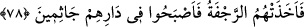

halkı toplanıp devenin kesilmesine karar verdiler.
İbn İshâk şöyle demektedir: Deveyi boğazlayan dokuz kişi toplanıp: “Gelin, Sâlih’i
öldürelim. Eğer davasında doğru ise kendisini öldürmemize mani olur. Yok eğer yalancı
ise onu da devesi gibi öldürürüz.” dediler. Geceleyin gelip ailesi ile birlikte ona baskın
yaptılar. Bunun üzerine melekler taşlarla onların kafalarını parçaladı.
Bazıları demişlerdir ki: Kudar, Mısta‘ ve dokuz arkadaşı gidip Sâlih (a.s.)’ın devesi
sudan ayrılırken onu gözetlediler. Mısta‘, deve geçerken ona ok atmak üzere orada bir
kayanın arkasına saklandı. Deve suyunu içip önüne gelince Mısta‘ oku fırlattı. Ok
devenin bacağına saplandı. Sonra Kudar çıkıp kılıçla onu boğazladı. Bunun üzerine
deve böğürerek yere yığıldı. Sonra da gerdanını kesip başını kopardı. Köy halkı gelip
etini aralarında paylaştılar. Yavru deve annesinin bu durumunu görünce “Kâra” denilen
bir dağa çıkıp gözünden yaşlar dökülerek üç kez böğürdü. Sonra yaratıldığı kayanın
yanına geldi. Kaya yarıldı, o da onun içine girip gözden kayboldu. “Derken dişi deveyi
boğazladılar” ifadesinin tafsilatı budur.
“ve Rab’lerinin buyruğundan dışarı çıktılar.” Yani Allah’ın emrine uymak
hususunda büyüklendiler. Bu emir, Salih (a.s.)’ın “Onu bırakın...” ve “Ona bir kötülük
etmeyin.” diyerek kendilerine tebliğ ettiği emir ve yasaktı. Yâhut da Allah’ın emri
demek olan dinine ve şeriatına karşı büyüklük gösterdiler.
Şöyle bir mânâ vermek de caizdir: Onların büyüklenmeleri, Rab’lerinin emrinden
çıktıkları için olmuştur. Rab’lerinin emri ise deveyi rahat bırakmaları idi. İşte bu
onların büyüklenmelerinin sebebi olmuştur. Bu ifadenin benzeri şu ayette de geçer:
“Bunları ben kendiliğimden yapmadım.” (el-Kehf, 18/82) (el-Keşşaf’ta böyle
geçmektedir.)
Semud kavmi Allah’ın emrine karşı gelip deveyi boğazladıkdan sonra köşeye
sıkıştırmak ve susturmak amacıyla Sâlih (a.s.)’a: “Ey Salih, eğer hakikaten
peygamberlerden isen bizi tehdit ettiğin” deveyi öldürdüğümüz takdirde geleceğini
söylediğin azabı “getir.” dediler.” Çünkü senin peygamberlerden biri olman, va‘d ve
tehdit olarak söylediklerinin doğruluğunu gerektirir.
78. Bunun üzerine onları o (gürültülü) sarsıntı yakaladı da yurtlarında diz üstü
dona kaldılar.
“Bunun üzerine onları, o sarsıntı” şiddetli bir deprem “yakaladı.” Fakat bu, Sâlih
(a.s.)’a karşı söyledikleri sözün hemen akabinde olmadı. Bilakis daha sonra geleceği
üzere üç gün içerisinde azabın habercisi olan bir kısım belalar meydana geldi.
Kur’an-ı Kerim’de Semûd kavminin kıssasının anlatıldığı yerlerde şu değişik ifadeler
vârid olmuştur: “Onları, o sarsıntı yakaladı.” (el-A‘raf, 7/78). “Onları o korkunç ses